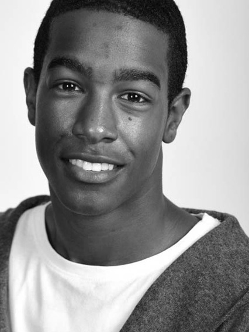

Engelsk
Digital prøve med adgang til internettet
Til eleven
Du har to timer til at løse denne del af prøven.
Prøven består af 1 opgave i fri skriftlig fremstilling:
Du har to timer til at løse denne del af prøven.
Prøven består af 1 opgave i fri skriftlig fremstilling:
YOUNG PERSON OF THE YEAR
En del af opgavebesvarelsen kræver, at du bruger internettet. Du må godt bruge ord, vendinger og billeder fra informationssiderne og anvende dem i din besvarelse.
Du må bruge:
Du må bruge:
- ordbøger, stave- og grammatikkontrol og grammatiske oversigter
- kommunikere med andre elektronisk under prøven (fx SMS og Facebook)
- benytte oversættelsesprogrammer (fx Google Translate)
- kopiere og indsætte sammenhængende tekst
Free writing
In this part of the exam, you have access to the Internet. It is recommended that you allow yourself at least one and a half hours for the writing process.
YOUNG PERSON OF THE YEAR
You don’t have to be an adult to do something incredible. In some countries, like Britain and Australia, young people who have done amazing things are honoured in Young Person of the Year Awards. The young people who have been nominated have all been chosen for their exceptional achievements and the hard work they have put into reaching their goals, but their stories are very different.
Here are two examples of amazing young persons:
| Jessica Watson, who sailed around the world alone, was Young Australian of the year 2011. |
Joel Davis, who founded a successful, non-profit organization called Tutors United to help poor children with schoolwork, was joint winner of the London Young People of the Year Award in 2014. |
|  |
You can find more information about them and also other award winners and finalists/runners-up in the links below.
Write an article (350-450 words) for a youth magazine about a young person who has been nominated or won an award. Base your article on your Internet research.
Include
|